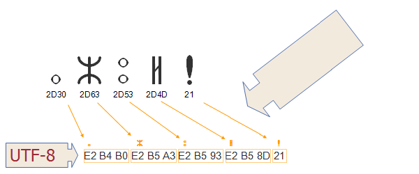

Intended audience:
шифрувальники XHTML/HTML (використовуючи редактори або скрипти), розробники скриптів (PHP, JSP, і т.д.), шифрувальники CSS, і кожен, хто не знайомий із термінологією кодування символів і хоче зрозуміти її основи.
Дана стаття містить ряд основних понять, необхідних для розуміння інших статей, які стосуються символів і кодування символів.
Unicode - універсальний набір символів, тобто стандарт, який визначає в одному місці всі символи, що
необхідні для написання більшості існуючих мов, що використовуються на комп'ютерах. Unicode прагне бути, і в значній мірі вже є, розширенням всіх інших наборів символів, які були закодовані.
Текст на комп'ютері або в Мережі складається із символів. Символи представляють букви алфавіту, розділові знаки або інші символи.
У минулому, різні організації зібрали різні набори символів і створили кодування для них – один набір може охоплювати тільки основані на Латині західноєвропейські мови (за винятком таких країн ЄС як Болгарія чи Греція), інший може охоплювати, зокрема, Далекосхідну мову (таку як Японська), інші можуть бути одним з багатьох наборів розроблених в досить спеціальний спосіб для подання іншої мови десь у світі.
На жаль, ви не можете гарантувати ні того, що ваш додаток буде підтримувати всі кодування, ні того, що дане кодування буде підтримувати всі ваші потреби для представлення даної мови. Крім того, як правило, неможливо об'єднати різні кодування на тій самій веб-сторінці або в базі даних, тому, як правило, дуже важко підтримувати багатомовні сторінки, використовуючи підходи ‘успадкування‘ для кодування.
Unicode Консорціум забезпечує великий, єдиний набір символів, який направлений для включення всіх символів, необхідних для будь-якої системи письма у світі, включаючи стародавні скрипти (такі як Клинопис, Готика і Єгипетські Ієрогліфи). В даний час він є основним для архітектури мережі і операційних систем, і підтримується всіма основними веб-браузерами і додатками. Стандарт Unicode також описує властивості та алгоритми для роботи з символами.
Такий підхід полегшує роботу з багатомовними сторінками або системами, і забезпечує набагато краще покриття ваших потреб, чим більшість традиційних систем кодування.
Нижче показано скрипт блоки Unicode, як Unicode 5.2-ї версії:
Перші 65,536 позицій місця коду в наборі символів Unicode називається Базова Багатомовна Площина (BMP). BMP включає в себе більшість найчастіше використовуваних символів.
Номер 65,536 це 2 в 16 степені. Іншими словами, максимальне число підстановок бітів, які ви можете отримати в двох байтах.
Набір символів Unicode також має місце для близько мільйона додаткових позицій місця коду. Символи в цьому останньому діапазоні називають додаткові символи.
Важливо чітко розуміти відмінність між поняттями набір символів і кодування символів.
character set (набір символів) або repertoire (репертуар) включає в себе символи, які можна було б використати для конкретної мети - ті, які потрібні для підтримки
західноєвропейських мов на комп'ютерах, або ті, що китайська дитина буде вчити в школі в третьому класі (нічого спільного з комп'ютерами).
coded character set (закодований набір символів) - набір символів в якому унікальний номер був присвоєний кожному
символу. Одиниці закодованого набору символів відомі як місця коду. Значення місця коду представляє позицію символу в закодованому наборі символів. Наприклад, місце коду для літери Г в кодуванні символів Unicode рівне 225 в десятковій, або E1 в шістнадцятковій системі числення. (Зауважимо, що шістнадцяткова система числення
зазвичай використовується для посилання на місця коду, і буде тут використовуватися.)
Закодовані набори символів деколи називають code pages (кодові сторінки).
character encoding (кодування символів) віддзеркалює спосіб у який закодований набір символів відображається в байтах для маніпуляцій на
комп'ютері. На малюнку нижче показано, як символи й місця коду в скрипті Тіфінаг (Берберська мова) відображаються в послідовності байтів в пам'яті за допомогою кодування UTF-8. Значення місця коду для кожного символу перераховані безпосередньо нижче гліфа (тобто візуальне подання) для того символу у верхній частині діаграми. Стрілки показують, як місця коду переходять в послідовності байтів, де кожен байт представлений двозначним шістнадцятковим числом. Зверніть увагу, як Тіфінаг відображає місця коду трьома байтами, в той час, як знак оклику відображає одним байтом.

Це пояснення представляє в кращому вигляді деякі деталізовані номенклатури, які пов'язані з кодуванням. Більш детальну інформацію можна знайти в Технічній
Доповіді Unicode #17.
Один набір символів, кілька кодувань. Багато стандартів кодування символів, таких як у ISO 8859-ї серії, використовують один байт для даного символу і кодування є
прямим відображенням для скалярного положення символів в закодованому наборі символів. Наприклад, літера A в кодуванні символів ISO 8859-1 знаходиться на 65-ій позиції символів (починаючи з нуля), і закодована використовуючи
байт із значенням 65 для представлення на комп'ютері. Для ISO 8859-1 це ніколи не змінюється.
Проте для Unicode не все так просто. Хоча місце коду для літери Г в
кодуванні символів Unicode завжди рівне 225 (у десятковій системі), в UTF-8 він представлений на комп'ютері двома байтами. Іншими словами, це не тривіально,
взаємне відображення між значенням кодування набору символів і закодованим значенням для цього символу.
Крім того, в Unicode є кілька способів кодування одного і того ж символу. Наприклад, літера Г може бути представлена двома байтами в одному кодуванні і чотирьма байтами в іншому. Форми кодування які можуть використовуватися з Unicode
називаються UTF-8, UTF-16, та UTF-32.
UTF-8 використовує 1 байт для представлення символів в наборі ASCII, два байти для символів у кілька алфавітних блоків, і три
байти для решти BMP. Додаткові символи використовують 4 байти.
UTF-16 використовує 2 байти для будь-якого символу в BMP, і 4 байти для додаткових символів.
UTF-32 використовує 4 байти для всіх символів.
У наступній таблиці, в першому рядку чисел представлена позиція символу в кодуванні Unicode.
Інші рядки показують значення байтів, використовуваних для представлення цього символу в належному кодуванні символів.
Для XML і HTML (починаючи з версії 4,0 і вище) набір символів документу називається Універсальний
Набір Символів (UCS) як це визначено обома стандартами ISO/IEC 10646 та Unicode. (Для простоти і відповідно до загальноприйнятої практики, ми будемо називати
UCS тут просто як Unicode.)
Що це означає, те що логічна модель, яка описина в термінах набору символів, що описує як обробляються XML і HTML визначається
Unicode. (З практичної точки зору це означає, що браузери зазвичай перетворюють весь текст в Unicode внутрішньо.)
Зауважимо, що це не означає, що всі HTML і XML документи повинні використовувати кодування Unicode! Однак це означає, що
документи можуть містити лише символи визначені Unicode. Будь-яке кодування може використовуватися для вашого документу до тих пір, поки воно правильно призначене і являє собою підмножину
набору символів Unicode.
Для отримання додаткової інформації про набір символів документа дивіться статтю Набір символів документа.
Екранований символ - спосіб представлення символа без його фактичного використання.
Наприклад, не існує способу безпосереднього представлення такого символу Івриту, як Чђ у документі, якщо ви використовуєте кодування ISO 8859-1
(яке охоплює західноєвропейські мови). Один із способів, щоб вказати, що ви хочете включити цей символ є використання такого екранованого символу XHTML, як
א. Оскільки набором символів документа є Unicode, клієнтський додаток повинен розпізнати, що це представляється такий символ Івриту, як Алеф.
При отриманні документа із сервера, сервер зазвичай відправляє деяку додаткову інформацію з документом. Це називається заголовком HTTP. Ось приклад такого роду інформації про документ, який передається по заголовку HTTP з документом, як він переміщається від сервера до клієнта.
Другий рядок знизу в даному прикладі несе інформацію про кодування документу.
HTTP/1.1 200 OK
Date: Wed, 05 Nov 2003 10:46:04 GMT
Server: Apache/1.3.28 (Unix) PHP/4.2.3
Content-Location: CSS2-REC.en.html
Vary: negotiate,accept-language,accept-charset
TCN: choice
P3P: policyref=http://www.w3.org/2001/05/P3P/p3p.xml
Cache-Control: max-age=21600
Expires: Wed, 05 Nov 2003 16:46:04 GMT
Last-Modified: Tue, 12 May 1998 22:18:49 GMT
ETag: "3558cac9;36f99e2b"
Accept-Ranges: bytes
Content-Length: 10734
Connection: close
Content-Type: text/html; charset=UTF-8
Content-Language: en
Якщо документ створюється динамічно за допомогою скриптів, ви точно зможете додати цю інформацію до заголовку HTTP. Якщо ви
обслуговуєте статичні файли, сервер може зв'язати цю інформацію з файлами. Спосіб налаштування сервера для передачі інформації про
кодування символів таким чином буде варіюватися від сервера до сервера. Тому ви повинні дізнатися про нього у адміністратора сервера.
Як, приклад, Apache сервери зазвичай надають кодування за замовчуванням, яке зазвичай можна перевизначити користувацькими налаштуваннями. Наприклад,
користувач може додати наступний рядок до .htaccess файлу для обслуговування всіх файлів з розширенням .html як UTF-8 в цій та всіх дочірніх директоріях: